The following images are used for testing images as they are integrated into the text of The Riven Expedition. It can also be used to cache all of the images of the story to make loading of subsequent chapters easier.
If you don't want to spoil part of the story, don't look at these images.


All but purple

All colors
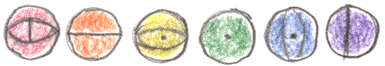

| 1 |  |
6 | 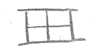 |
| 2 |  |
7 |  |
| 3 |  |
8 | 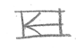 |
| 4 | 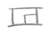 | 9 | 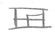 |
| 5 | 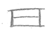 | 10 | 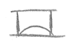 |
| 233 |  |
234 |  |

Numbers 0-9

Numbers 0-24

Temple Island
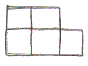
Jungle Island
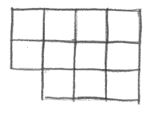
Crater Island
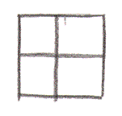
Survey Island

Prison Island
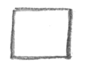
Overall

Ytram
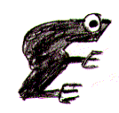
Sunner

Beetle
Fish
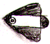
Whark
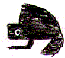
Group Shot
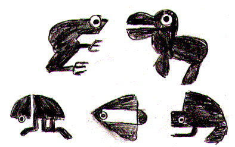
Moity Knife
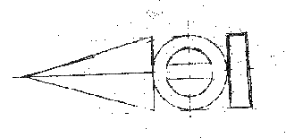